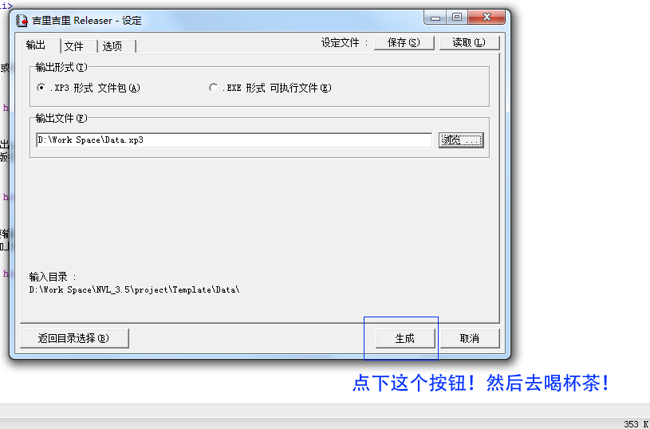
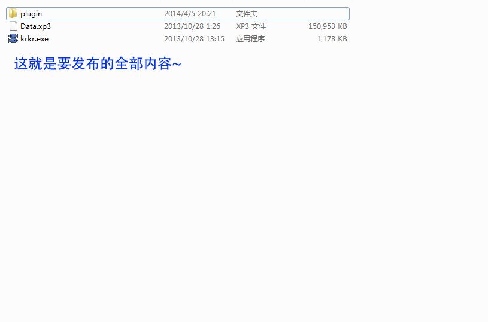
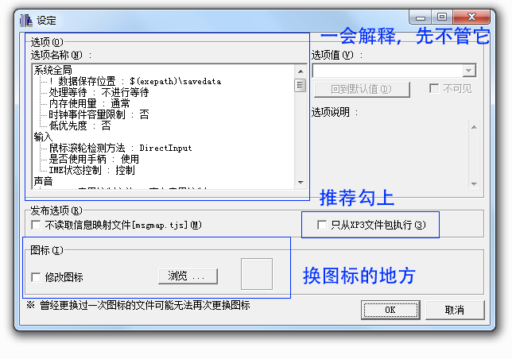

啊，这么快就已经到最后一步了？
恭喜，现在只要再做最后一些处理，你的游戏就可以发布了。
首先需要的是对游戏的菜单进行调整。
平时测试的时候，“调试”菜单栏可以打开后台，方便你查看游戏过程中发生的事，但你肯定不想玩家通过后台查看甚至任意修改角色好感度吧。
所以呢，把没用的菜单关掉是很重要的一步。
只要打开“界面设定-Config.tjs”就可以很简单地关掉不想要的菜单项，当然，关掉整个菜单也是OK的。
假如无法使用Config.tjs的图形化编辑工具的话，用记事本打开Config.tjs然后把456行的;debugMenu.visible = true;改成;debugMenu.visible = false;也能达到同样效果。
所谓封包，就是把游戏的Data文件夹，封装成一个Data.xp3文件的过程。
这么做有以下好处：
吉里吉里自带的封包比较简单，保密性并不强。
所以，如果有需要，在封包之后，还可以用第三方加密插件或软件对游戏进行更周密的保护。
如上图，在NVL主界面上点下“打包”按钮之后，就会自动弹出krkrrel.exe并指定要打包的目录。
假如使用的是繁体版NVL，由于目前还没有出现可用的繁体版打包工具，因此会调用的工具将是日文版，画面可能显示成乱码，但功能不变。（哪位好心人做一个呢？）
点下如上图框起来地方的“浏览”按钮，选择打包后的文件要输出到的地方。
在文件名一栏填写“Data.xp3”，请注意扩展名“.xp3”要加上哦。
现在我们已经指定了输出路径，剩下的就是输出文件了。

封包的过程通常会非常顺利，但也有例外的情况。
例如说，如果游戏里有文件起名非常奇怪，出现了封包工具不认识的字符，就可能会报错。
这就是为什么推荐大家给文件起名的时候尽量使用英文字母和下划线的原因。
如果报错的话，请检查一下素材文件名。
有时候也会出现一些语系问题，例如说在繁体系统下使用简体krkrrel.exe，可能会导致封包的Data.xp3不完整。
这个时候请考虑切换系统语系或使用日文原版krkrrel.exe。
封包完成之后会弹出提示，之后就可以在指定的目录下面找到一个Data.xp3文件。
当然光有这个素材文件包，游戏是执行不了的，还需要执行的游戏EXE和其他插件。
所以现在我们返回游戏工程文件夹（就是project文件夹下面的那些，随便打开哪个），找到下面这两个东西。
然后把它们复制到Data.xp3所在的地方。

现在，导出的目录下面就是这三个东西。点一下krkr.exe，测试一下你的游戏吧。
现在已经是打包完成的状态了，剩下的都是细节啦。
当然，细节也是很重要的，例如说你可以把“krkr.exe”改名成“mygame.exe”或者随便别的什么。
当然这里还是推荐使用英文，因为其他语言的文件名可能会导致游戏在不同语系的系统下无法正常执行。
接下来？接下来当然是换图标了，做了这么久，发布一个图标是吉里吉里经典两条小鱼的游戏，有点不够个人特色吧。
回到放NVL编辑器的地方，选择Tool文件夹，然后在里面找到如下图的工具“krkrconf.exe”，这就是用来修改游戏可执行文件的。
执行这个工具，然后选择刚刚贴过去的那个exe。
项目看起来有点多，不过总的来说就是下面这样：

总之先勾选“修改图标”的那个框，然后点击“浏览”，选择已经做好的图标文件，再点“OK”，等待“设定已保存”的提示弹出，一切就大功告成了。
至于“已经做好的图标文件”？这里要注意，吉里吉里的修改工具对图标文件的限制也有点严格，如果格式不对的话，可能会换不了或者搞坏游戏exe。
虽然搞坏了也不是什么大事，再复制一个就行了，不过总之，还是先知道一下吉里吉里支持的图标要怎么做吧。
这里推荐使用一款免费开源的图标制作软件
Greenfish Icon Editor Pro
，只要有一张PNG图片，就可以把它变成图标。
具体做法就是使用“File-Open”打开准备做成图标的PNG图，然后右键点击如下图的位置，选择“Create icon from image”。
演示范例：《高考恋爱100天》，现正发售中，欢迎大家下载试玩版（喂）
在弹出的选项里，选择下面这些，将会被包含在图标文件里的内容。这样不管是窗口左上角的小图标，还是平时看到的EXE图标就都包含在里面了。
点击“OK”，然后再点击左上角的“Save”（小磁盘图样），保存成“.ico”格式，就完成了一个图标文件。
总之，现在按照上面说的做法，更换一下自己的游戏图标吧。
记住，替换过程出现问题，导致exe坏掉也没有关系，再复制一个来改就行了~
假如对图标格式不满意，想要包含更多大小（例如256x256）的图标，也是可以的。
这种情况下，使用krkrconf.exe是不行的，需要用其他的第三方软件例如Resource Hacker来替换原有图标。
接下来某D要透露一个几乎100%的新手在打包时都会出现的、以及很多老手还是会犯的经典错误。
那就是……当执行一个打包完成的游戏时，按下Shift+F4……你会发现辛辛苦苦关掉的后台又跑出来了。
总之都怪那邪恶的快捷键！
这个解决方法也很简单，依然是使用krkrconf.exe进行修改，如下图。
之前在使用打包工具的时候，应该已经有人注意到了，除了“打包成.xp3”之外，还有一个选项是“打包成可执行文件”。
这个选项可以把整个游戏打包成一个文件，如果把插件也都放进Data文件夹的话，那么整个游戏就只剩一个文件了，感觉似乎也很方便。
但为什么推荐打包成.xp3呢？原因是，当游戏发布以后，你可能会发现一些需要修正的错误，这时候重新上传整个游戏就有点不划算了。
简单的做法就是制作一个体积很小的补丁，修正错误的文件。
如果打包成可执行文件的话，制作补丁就会很麻烦，因此还是推荐使用.xp3的封包方式。
加载补丁是个很简单的事，只要将补丁文件patch.xp3放到和Data.xp3同个目录下，补丁文件里更新的内容就会自动覆盖Data.xp3里的旧内容。
如上图就是一个加了补丁的游戏。
补丁文件的制作方法和游戏打包是一样的。
首先，将需要更新的文件放到一个文件夹内。
然后直接从Tool文件夹下打开krkrrel.exe，或者在NVL里再次点击“打包”按钮后返回到目录选择。
在目录选择窗口里指定放有这些更新文件的文件夹，然后输出成名为patch.xp3的.xp3文件即可。
由于THE NVL Maker的一些系统文件放置的目录特殊，有可能会导致这些文件在patch.xp3之后加载，以致不能被更新内容覆盖。
因此3.7以后NVL在Override.tjs里加入了一点修改。
假如发现3.7之前的版本出现有些文件无法更新的情况，请尝试把有如下代码的Override.tjs也放入补丁包内。
但请注意吉里吉里的一些配置文件，例如Config.tjs是无视补丁的。
假如一切的一切更新都不奏效，请直接重新打包上传游戏吧~（所以说，发布之前好好地测试多次是很重要的！）
现在你已经知道了完成一个游戏的全过程，接下来就是上传到网络和大家分享了。
在上传之前，请好好地测试游戏并且检查使用到的内容，不要盗用别人的劳动成果哟~